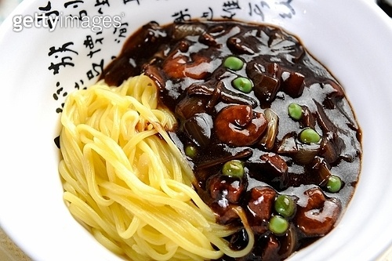
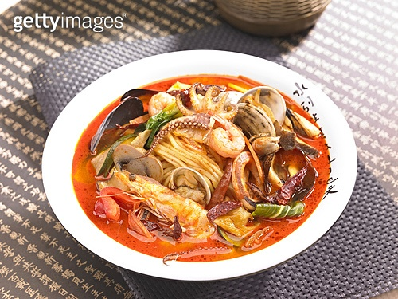
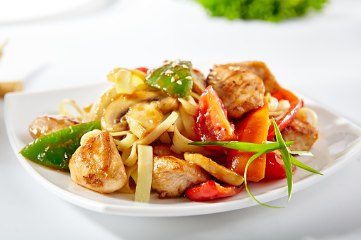

-
짜장면

재료 준비(2인분 기준)
양파 1개
양배추 1/5개
돼지고기 200g
오이 1/3개
파 2줄기
면 2인분
춘장 1/3컵
설탕 1T
물전분 3T
- 후라이팬에 식용유 2컵을 붓고 춘장 1봉지를 넣고 기름에 춘장을 튀겨줍니다.
- 짜장면 야채를 준비합니다.오이는 돌려깎이해서 채썰고(고명용)
양배추와 양파는 큼직큼직 썰어주고파는 잘게 잘게 썰어서 준비합니다.
- 불을 켜지 않은 후라이팬에 식용유를 붓고 파를 넣고 볶아서 파기름을 내줍니다.
- 파기름이 얼추 나면 잘게 썰어 놓은 돼지고기를 넣고 볶아줍니다.
- 고기가 익으면 오이를 제외한 양배추와 양파를 넣고 볶아줍니다.
- 튀긴 춘장을 1/3컵 정도 넣고설탕 1T를 넣고 볶아줍니다.
- 춘장이 야채와 고루 섞이게 볶아줍니다. 이때 먹으면 흔히보던 간짜장이 됩니다.
- 물을 재료가 자박자박 할때까지 넣어줍니다. 끓여 주다가 물 : 전분 = 3 : 1로 타준 전분물로 짜장의 농도를 걸쭉하게 만들어 줍니다.
- 면을 소금 1T를 넣고 2인분 정도 13분 삶아 줍니다.
면이 익으면 그릇에 면을 셋팅하고 위에 짜장을 부어주고 오이 고명을 올려주면 완성!
-
짬뽕

재료 준비
홍합 15개
오징어 1마리
당근1/2개
애호박1/2개
다진마늘 1스푼
고추기름 2스푼
간장 2스푼
새우 10마리
양파 1개
대파 2뿌리
고춧가루 2큰술
굴소스 2큰술
굵은소금 1/2스푼
후춧가루 적당히
- 양배추, 당근, 양파, 애호박, 대파, 고춧가루 2스푼, 다진마늘 1스푼,
굴소스2큰술, 간장2큰술, 후춧가루 톡톡 고추기름 또는 식용유를 두르고 달달 볶아줍니다.
- 야채가 숨이 죽으면 오징어, 새우, 홍합을 넣어 주고 물 1,500ml을 붓고 팔팔팔 끓여줍니다.
- 팔팔 끓어오르면 소금으로 간을 맞춰줍니다.
- 면을 끓여 넣어주면 완성!
-
탕수육

재료 준비
돼지고기 안심 300g
소금 약간
후추 약간
계란 노른자 1개
감자전분 250g
파프리카(색깔별로) 1/2개
양파 1/2개
포도씨유 250cc
물 250cc
설탕3T
소금 약간
감자전분1/2T
- 100%감자전분을 통에 담아 물을 넣고 저어줍니다. 4시간 동안 가만히두고 가라앉혀 젖은 전분을 준비해줍니다.
- 돼지고기 안심을 손가락 굵기로 썰어주고, 비닐봉지에 담아 소금, 후추 뿌려 30분 재워줍니다.
- 파프리카, 양파 다듬고 계란 노른자 준비하고,
물, 레몬가루, 설탕, 소금을 타둡니다. 전분물은 1번에서 1/2T 가져와 물과 섞어줍니다.
- 밑간한 고기에 노른자 넣고 봉지를 오므리고 젖은 전분 넣고 잘 주물러 주세요.
※여기서 포도씨유 1T를 넣으면 튀길때 고기를 떼어내기가 더 쉬워요.
- 팬에 포도씨유를 넣고 튀겨줍니다.
※가스렌지-중불/인덕션-튀김180도
아래가 노릇해지면 한번 뒤집어주고 망에 꺼냅니다.
- 팬에 5번의 뜨거운 기름 2T 넣고 채소 넣어 잠깐 볶다가 준비해둔 소스물을 부어줍니다.
끓으면 전분물 휘저으며 넣고 걸쭉해지면 고기 넣어 뒤섞어주고. 바로 불을 꺼줍니다.
- 그릇에 담으면 완성!